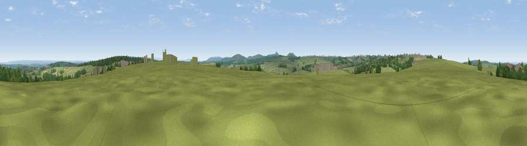

Viewpoint near Hallworthy
#22454 in England · top 42% of its area beats it · near HallworthyWhere it is
The exact computed spot (SX 17125 87875). Click the marker for map links.
The view, rendered

A 360° render of this exact spot computed from the terrain model, tree cover and land cover — summer colours, afternoon light, calibrated against photographs of famous viewpoints. Real trees, hedges and buildings will differ in detail.
The panorama
Grey silhouette: terrain skyline in each direction (720 bearings, Earth curvature and refraction included). Dashed green: skyline with trees (+15 m) and buildings (+8 m) as obstacles. Blue strip: how far the ground is visible on each bearing.
Where the view opens
Wedge length = distance to the farthest visible ground on that bearing (vegetation-aware). Rings at 10, 25 and 50 km.
What fills the view
85% grassland · 8% woodland · 4% cropland · 2% built-up · 1% water
Angular shares of the visible panorama (visual magnitude), not map area. Landscape diversity 0.26 (0–1 Shannon).
Key numbers
More beautiful places nearby
The staircase of upgrades: each row has a higher view potential than everything closer. Driving times are estimates from straight-line distance, calibrated against real road routing — check an actual route before setting out.
| Place | Direction | Drive | Score |
|---|---|---|---|
| Viewpoint near Warbstow | NE · 3 km | ~8 min | 68.0 |
| Viewpoint near Warbstow | NE · 4 km | ~9 min | 71.2 |
| Viewpoint near Lesnewth | WNW · 5 km | ~11 min | 78.1 |
| Viewpoint near Lesnewth | WNW · 6 km | ~13 min | 82.6 |
| Viewpoint near Lesnewth | NW · 7 km | ~15 min | 87.7 |
| Viewpoint near Crackington Haven | NW · 8 km | ~15 min | 88.1 |
| Viewpoint near Combe Martin | NNE · 74 km | ~97 min | 88.9 |
| Holdstone Hill | NE · 75 km | ~98 min | 90.2 |
50.66176, -4.58888 · source: screening · position refined by local search. Computed location — check access rights before visiting.